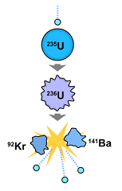
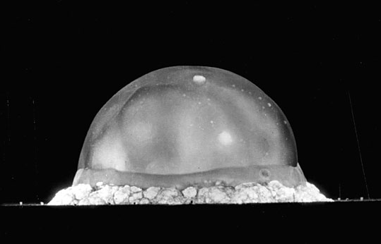
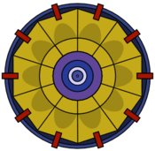
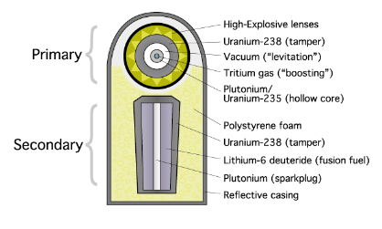
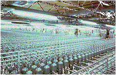
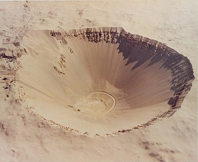
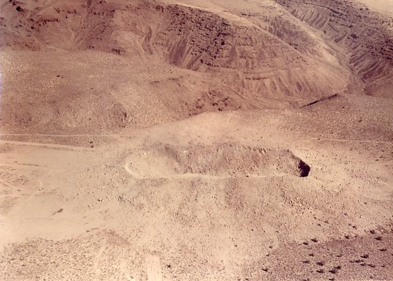

Man-Made Nuclear Devices
Natural Nuclear Fission
It takes a lot of energy to start a proton-proton chain reaction. A non-nuclear reaction such as a chemical reaction (read: high explosives or TNT) just does not produce enough energy quickly enough to achieve hydrogen fusion. So another energy source is needed to start the fusion. There is another nuclear reaction that occurs naturally. Under the right conditions some very heavy elements such as isotopes of uranium can be split apart thereby releasing some energy. This splitting apart of a heavy nucleus is called fission. It has been determined, in fact, that fission in the lower earth's crust and mantle is responsible for about half of the earth's total heat (with the other half still retained from the earth's formation).
Discovery of Nuclear Fission

In the 1930's it was known that uranium was one of many elements that was "radioactive". The term radioactive was given to elements that seem to emit subatomic particles such as alpha particles (helium nucleus consisting of 2 protons and 2 neutrons) and gamma rays (high energy light at a high frequency: beyond ultraviolet, beyond X-rays). It was therefore known that radioactive elements were losing mass and that they eventually would be transmuted to a slightly lighter element. Uranium, for example (92 protons + 143 neutrons = 235 nucleons) would decay to radium (yet another unstable radioactive element with 88 protons + 133 neutrons = 221 nucleons). In the late 1930's some scientists experimented by bombarding uranium with low speed neutrons. The expectation was that the bombardment of uranium with neutrons would speed up the radioactive process and produce radium faster. However, something completely different happened. Instead of a resulting element with slightly fewer nucleons (like radium), they found one of the products to be an element with 141 nucleons. This element is an isotope of barium (56 protons, 85 neutrons). That means there must also be a product with 94 nucleons to account for the total mass. This element is an isotope of krypton (36 protons and 58 neutrons). So instead of the neutron bombardment of uranium chipping away and producing radium, it instead produced barium and krypton, two much lighter elements. Hence the discovery of fission. The story of this discovery is fascinating as it brought together a number of scientists during a very difficult time in our world history. The best collection of events leading to a scientific discovery is here. This web page has written and audio quotes from the participating scientists. If you have some time and would like to read a fascinating story, please visit that page.
If you read the article on the discovery of fission you would know that one of the main contributors to the discovery of fission was Lise Meitner. She also noticed that during the splitting of uranium there were two byproducts of the reaction. First, there was a significant release of energy and second, the reaction created more neutrons. The release of energy was caused by a loss of mass. This energy could be calculated by using Einstein's equation E = mc2. But the release of neutrons made her wonder if those neutrons could then be carried over to again bombard the uranium, thereby producing more energy and neutrons. In other words, she envisioned a chain reaction. This chain reaction is the basic technology used in nuclear power plants. It is also the basic technology that was later used in nuclear weapons.
Nuclear Fission Devices

The photo above was taken at a time of 25 milliseconds after detonation. This was the first test of a fission device. The name of the device was Gadget which was part of the Trinity Project. The width of the shock wave at this time is about 400 meters while its height is about 300 meters. There were about 6 kg of fissionable material (plutonium-239) and about 2,400 kg of high explosives in the device. This device produced about 90 TJ (that's terajoules, where one TJ is equivalent to about 1 billion BTUs) or about 20 kT equivalent of TNT. A copy of this device was used about 24 days later in combat in Japan. One observer that was standing about 8 miles from the Gadget test center dropped a piece of paper as the air blast passed him. The paper hit the ground about 2½ meters away. It took the air blast about 40 seconds to reach him.

The basic design of the device was a sphere of high explosives inside of which contained the fissionable material. The sphere of high explosives was designed so that when detonated it produced a series of shock waves that eventually met at the center of the sphere. The shock wave compressed the target fissionable material (plutonium-239) that caused an increase in density of about 300%–400%. This compression caused what is called "critical mass". The critical mass is a density where the neutron emissions of the plutonium begin to form an uncontrolled chain reaction. That is, as a neutron splits one atom of plutonium, it releases energy and other neutrons. Those neutrons then split other plutonium atoms and the chain reaction continues.
Thermonuclear Devices

Since the temperature at the source of the fission device reaches 100,000,000° F, it was speculated in the late 1940's that theoretically a fission device would produce enough energy to start a proton-proton chain fusion reaction. At this time in our history, the US was in a competition with the Soviets over who could build the most powerful nuclear device. The design in the image above adds a second stage to the device. The first stage, called the primary, is a new fission device design that uses the implosion technology to start the fission chain reaction. The fission fuel is a combination of plutonium-239 and uranium-235. Notice that there is something new in the fission device. The plutonium-239 sphere is hollow and inside the sphere is tritium gas (tritium is a form of hydrogen that has one proton and two neutrons). The addition of tritium in the fission device is called boosting. In normal un-boosted fission devices, only about 20% of the plutonium/uranium is actually used in the chain reaction. The rest gets blown apart by the violent chain reaction. With the addition of tritium to the fission reaction, more of the plutonium/uranium is involved in the chain reaction. The initial fission chain reaction produces enough energy to start a fusion reaction in the tritium. When tritium fuses to form helium, it produces a flood of high energy neutrons. These tritium-produced neutrons are then able to finish the fission chain reaction for more of the plutonium/uranium fuel. This boost increases the efficiency of the fission chain reaction by about 100%.
The second stage, called the secondary, uses the energy provided by the primary to start a fusion reaction. The secondary is imploded as is the primary, but this time the implosion is not done by high explosives, but rather by the energy, and in particular, by the high energy X-rays generated by the primary. Notice that the secondary is a combination of fission and fusion fuel. The fusion fuel of choice is lithium deuteride. A molecule of lithium deuteride contains one atom of lithium and one atom of deuterium (deuterium is a hydrogen atom with an extra neutron). When lithium is exposed to high energy neutrons, it decays to tritium. This tritium then fuses with the deuterium to form helium. The lithium decay also produces high energy neutrons that react with the fission material and make the fission reaction more efficient. Whereas the Gadget device produced about 20 kT, the first ever thermonuclear device using the two-stage design produced over 10 MT. So the two-stage device produced about 500 times the energy of the one-stage Gadget device.
Video of tests released by the Lawrence Livermore National Laboratory.
Why Doesn't Every Country Have Nuclear Weapons?

If you have been following this part on man-made devices, you may be wondering if any classified information has been divulged. All of the information on this page is available on the internet. It is all declassified information. The second question you may have is, with all this information available, why don't all countries have a nuclear device? There are two main reasons why not.
The materials are hard to make. The primary needs high-grade uranium-235 and plutonium-239. Since uranium-235 makes up only 0.7% of all uranium on earth, it must be "separated" from natural uranium (uranium-238). Since the number of nucleons in U-238 is greater than that of U-235, then U-238 is slightly heavier than U-235. A chemical process first converts the U-238 to a gas. The gas is then put into a series of centrifuges where the two isotopes are separated. This process is not as simple as it sounds. It takes hundreds of thousands of centrifuges to do the job. The gas is first put into one centrifuge, it is spun, and some of the heavier U-238 is pulled off. That mixture is then sent to the next centrifuge, it is spun and again some of the heavier U-238 is pulled off. After repeating this process about 200,000 times, what is left is about 80% pure U-235.
The first fission device that used U-235 needed about 62 kg of the isotope. In order to get 62 kg, they had to start with 9,000 kg of uranium ore. The building just to house the centrifuges took 20,000 people to build and was the largest building structure in the world. It also took 12,000 people to run the plant. The cost in 1944 was about $500,000,000 which is about $6,000,000,000 in today's dollars. But even more important, the plant used 10% of the whole country's electrical output for one year.
Plutonium-239 does not exist naturally on earth. Since its half-life is 24,000 years, if there were any at the time the earth formed, it is long gone. The only way to produce plutonium-239 is in a nuclear reactor. The process starts with uranium ore, U-238. That uranium is bombarded with neutrons, and after a few decay processes, what is left is plutonium-239. The nuclear reactor process requires precision timing of the neutron bombardment. If the timing is off just a fraction, the whole product is ruined. Care also must be taken if the process is successful. The critical mass of plutonium-239 is about 4.5 kg. Any accumulation over that mass will cause a spontaneous chain reaction, which under any circumstances will cause a bad day.
The nuclear device must be engineered in a precise way. When you look at the schematic for the primary fission stage, it looks simple. You just put a piece of plutonium in the center of a lot of high explosives, and ignite the explosives. The problem is that if all the shock waves produced by the explosion do not meet precisely at the center, the plutonium is blown apart before it can be compressed to a critical mass. The explosives that surround the plutonium center are ignited by point ignition devices. The fission device normally has either a spherical or an ellipsoid shape. For simplicity, take a spherical shape with a diameter of 50 cm. It takes about 40 evenly spaced point ignition devices to cover the surface. When point ignition devices are activated electronically, the explosives immediately under the device burn and this burning propagates outward until the burn front reaches another burn front from another ignition device. That means that parts of the whole layer of explosive that covers the sphere start their burn at different times. This time difference causes the shock wave to be distorted and compensation is needed to straighten out the shock wave. That method of compensation will not be found on the internet. There are two other significant technical problems with the engineering of a fission device. Unfortunately, or fortunately, depending on how you look at it, the identification of those problems is still classified.
To get to thermonuclear requires overcoming problems on a much larger scale. For starters, there is a familiar problem of focusing the energy generated by the primary so that the conditions in the secondary are met so that fusion may be initiated. In this case, the energy delivered to the secondary by the primary is not through a shock wave, but rather by high energy X-rays. The inside of the housing of the device must be constructed of a material that will properly reflect X-rays, and of course the shape of the container must be made so as to reflect the X-rays and deliver them to the target fusion material. This reflection requirement also means that the components in the secondary must be precisely placed.
The US and Soviets had a big advantage during the development stages of nuclear devices. They both were free to conduct tests without any restrictions. Both were able through trial and error to confirm the success or failure of their designs through experiment.
To illustrate the challenges, consider North Korea. Even with the help of the Chinese government, their first test (a fission device) failed. Currently, their foray into the thermonuclear has yielded only a maximum of about 20–30 kT.
Clean Nuclear Device? My Experience
Is there any such thing as a "clean" nuclear device? By "clean" I mean free from generating radioactive materials. The strict answer is No. As long as we need a fission primary there will be radioactive materials released. In addition, the secondary fusion releases very high energy X-rays that in turn react with metals such as iron, magnesium and manganese to form long-term radioactive isotopes. However, it is possible to design a multistage device that, under certain circumstances can contain the radioactive material byproducts and irradiating X-rays.
During the late 1960's I worked as a mechanical engineer at the Lawrence Livermore National Laboratory. I was assigned to an initiative that had the general name "Plowshare". Within that initiative was a project that was aimed at creating a nuclear device that would be clean enough to be used for large-scale excavation projects. The device had to satisfy three requirements:
- The fireball from the blast could not breach the ground surface.
- The size of the primary fission device must be minimized.
- The irradiating high energy X-rays must be minimized.
The idea was to place multiple devices in a line far underground so that when detonated, the energy would cause the earth's surface to form a bubble directly over the detonations. The momentum of the bubble as it rises and its shape would throw a large amount of rock off to the side, thereby creating a channel.

Even though this was a "Plowshare" project, the first test was driven by the military. They basically came in and told the Plowshare people to step aside and stay out of the way. So against the advice of the Plowshare people, the military conducted the test. The first test of the concept of excavation was called Sedan and was conducted in the summer of 1962. Unfortunately, the test did not satisfy any of the above three requirements. For the first three seconds, the detonation went according to plan. As expected, a large bubble of earth was formed, rising out of the ground. If the device had been placed deeper, the bubble would have thrown the rock off to the side and would have then subsided. Unfortunately, the fireball breached the ground surface and threw radioactive material into the air.
The device was just a stock weapon-grade nuclear device, so no attempt was made to minimize radiation. Its yield was about 100 kT. The device was placed about 100 meters underground, and as it turned out this was not deep enough, and the device was far too powerful. The resulting crater was about 100 meters deep and about 400 meters wide. There were about 12 million tons of rock that were displaced to form the crater.
So the bulk of the project was to take nuclear weapon technology and modify it to suit the requirements. It turned out that the only weapon technology that we used was in the primary. The primary size was scaled down to a minimum size. It was plutonium-239 based, and had a tritium boost to maximize efficiency. Also any materials in the primary that could produce long-term radioactive elements were replaced with more suitable materials.
The secondary was actually made of three stages. So there was no secondary in the traditional sense. There were just the second stage, third stage and fourth stage. None of the secondary stages contained fissionable materials — no U-238, no plutonium-239. Therefore the secondary was a true "hydrogen", fusion-only device. The three stages increased in size with the second stage being the smallest. The second stage was the smallest fusion possible that would work with the minimized primary. The three fusion stages were made of exotic materials that would not form long-term radioactive isotopes.
Because the device was driven by a minimum amount of energy, all its components had to be manufactured to extreme tolerances. All of the components had to have polished surfaces with no defects. Any small defect would have caused a failure. Because of the extreme tolerances and exotic materials, the building of the secondary stages was an engineering problem. One job that I was assigned was to build a seamless sphere that only had a 0.25 mm hole where a special gas could be pumped in. Of course the normal way to build a sphere is to weld two hemispheres together and call it a day. However, the weld on the seam would introduce imperfections in the sphere that could not be tolerated. Unfortunately, or fortunately depending on how you look at this, the process that I used is still classified.
Because this device was not a weapon, there was no restriction on its size and weight. That was fortunate because it was then possible to stuff the device with X-ray absorbing material, namely boric acid. In fact, the solid boric acid made the device quite large. A typical warhead weapon is less than a meter long and less than a half meter in diameter and weighs a little over 100 kg. Our device was about 7 meters long, 2 meters in diameter, and weighed over 1,000 kg. The weapons people would stop by where we were assembling the device just to have a good laugh. However, we had a good laugh when the weapons people became interested in the technology that we had developed. However again, they had a good laugh when they declared everything in the device as classified and took the designs.

The image above shows the first and only test of our devices. There were three devices spaced in a line. The devices were placed about 520 meters below the surface. Their yields were in the range of only 15–20 kT. This was in contrast to the Sedan test that used a 100 kT device at a depth of only 100 meters. The resulting channel is about 250 meters long, 25 meters wide, and about 15 meters deep. Not bad for a prototype, and it worked the first time. There was no breach of the ground surface. The detection crew investigated the site and found radiation on the surface to be within allowable levels. They drew core samples and found that the radiation levels were acceptable for the first 350 meters and then the levels began to increase considerably after that down to below 500 meters. The source of the detectable radiation deep underground was from the fission products, and not from X-ray irradiation.